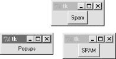
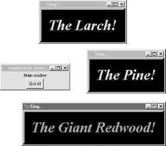

| I l@ve RuBoard |
|
7.3 Toplevel WindowsTkinter GUIs always have a root window, whether you get it by default or create it explicitly by calling the Tk object constructor. This main root window is the one that opens when your program runs, and is where you generally pack your most important widgets. In addition, Tkinter scripts can create any number of independent windows, generated and popped up on demand, by creating Toplevel widget objects. Each Toplevel object created produces a new window on the display, and automatically adds it to the program's GUI event-loop processing stream (you don't need to call the mainloop method of new windows to activate them). Example 7-3 builds a root and two pop-up windows. Example 7-3. PP2E\Gui\Tour\toplevel0.pyimport sys from Tkinter import Toplevel, Button, Label win1 = Toplevel() # two independent windows win2 = Toplevel() # but part of same process Button(win1, text='Spam', command=sys.exit).pack() Button(win2, text='SPAM', command=sys.exit).pack() Label(text='Popups').pack() # on default Tk() root window win1.mainloop() The toplevel0 script gets a root window by default (that's what the Label is attached to, since it doesn't specify a real parent), but also creates two standalone Toplevel windows that appear and function independently of the root window, as seen in Figure 7-3. Figure 7-3. Two Toplevel windows and a root windowThe two Toplevel windows on the right are full-fledged windows; they can be independently iconified, maximized, and so on. Toplevels are typically used to implement multiple-window displays, and pop-up modal and nonmodal dialogs (more on dialogs in the next section). They stay up until explicitly destroyed, or the application that created them exits. But it's important to know that although Toplevels are independently active windows, they are not separate processes -- if your program exits, all its windows are erased, including all Toplevel windows it may have created. We'll learn how to work around this rule later by launching independent GUI programs. 7.3.1 Toplevel and Tk WidgetsA Toplevel is roughly like a Frame that is split off into its own window, and has additional methods that allow you to deal with top-level window properties. The Tk widget is roughly like a Toplevel, but is used to represent the application root window. We got one for free in Example 7-3 because the Label had a default parent; in other scripts, we've made the Tk root more explicit by creating it directly like this: root = Tk() Label(root, text='Popups').pack() # on explicit Tk() root window root.mainloop() In fact, because Tkinter GUIs are built as a hierarchy, you always get a root window by default, whether it is named explicitly like this or not. You should generally use the root to display top-level information of some sort -- if you don't attach widgets to the root, it shows up as an odd empty window when you run your script. Technically, you can suppress the default root creation logic and make multiple root windows with the Tk widget, as in Example 7-4. Example 7-4. PP2E\Gui\Tour\toplevel1.pyimport Tkinter from Tkinter import Tk, Button Tkinter.NoDefaultRoot() win1 = Tk() # two independent root windows win2 = Tk() Button(win1, text='Spam', command=win1.destroy).pack() Button(win2, text='SPAM', command=win2.destroy).pack() win1.mainloop() When run, this script displays the two pop-up windows of the screen shot in Figure 7-3 only (there is no third root window). But it's more common to use the Tk root as a main window, and create Toplevel widgets for an application's pop-up windows. 7.3.2 Top-Level Window ProtocolsBoth Tk and Toplevel widgets export extra methods and features tailored for their top-level role, as illustrated by Example 7-5. Example 7-5. PP2E\Gui\Tour\toplevel2.py##################################################################
# popup three new window, with style
# destroy() kills one window, quit() kills all windows and app;
# top-level windows have title, icon (on Unix), iconify/deiconify
# and protocol for wm events; there always is an app root window,
# whether by default or created as an explicit Tk() object; all
# top-level windows are containers, but never packed or gridded;
# Toplevel is like frame, but is a new window, and can have menu;
##################################################################
from Tkinter import *
root = Tk() # explicit root
trees = [('The Larch!', 'light blue'),
('The Pine!', 'light green'),
('The Giant Redwood!', 'red')]
for (tree, color) in trees:
win = Toplevel(root) # new window
win.title('Sing...') # set border
win.protocol('WM_DELETE_WINDOW', lambda:0) # ignore close
msg = Button(win, text=tree, command=win.destroy) # kills one win
msg.pack(expand=YES, fill=BOTH)
msg.config(padx=10, pady=10, bd=10, relief=RAISED)
msg.config(bg='black', fg=color, font=('times', 30, 'bold italic'))
root.title('Lumberjack demo')
Label(root, text='Main window', width=30).pack()
Button(root, text='Quit All', command=root.quit).pack() # kills all app
root.mainloop()
This program adds widgets to the Tk root window, immediately pops up three Toplevel windows with attached buttons, and uses special top-level protocols. When run, it generates the scene captured in living black-and-white by Figure 7-4 (the buttons' text shows up blue, green, and red on a color display). Figure 7-4. Three Toplevel windows with configurationsThere are a few operational details worth noticing here, all of which are more obvious if you run this script on your machine:
In addition, top-level window widgets support other kinds of protocols that we will utilize later on this tour:
Notice that this script passes its Toplevel constructor calls an explicit parent widget -- the Tk root window (that is, Toplevel(root)). Toplevels can be associated with a parent like other widgets, even though they are not visually embedded in their parents. I coded the script this way to avoid what seems like an odd feature; if coded instead like this: win = Toplevel() # new window If no Tk root yet exists, this call actually generates a default Tk root window to serve as the Toplevel's parent, just like any other widget call without a parent argument. The problem is that this makes the position of the following line crucial: root = Tk() # explicit root If this line shows up above the Toplevel calls, it creates the single root window as expected. But if you move this line below the Toplevel calls, Tkinter creates a default Tk root window that is different than the one created by the script's explicit Tk call. You wind up with two Tk roots just as in Example 7-5. Move the Tk call below the Toplevel calls and rerun it to see what I mean -- you'll get a fourth window that is completely empty! As a rule of thumb, to avoid such oddities, make your Tk root windows early and explicit. All of the top-level protocol interfaces are only available on top-level window widgets, but you can often access them by going through other widgets' master attributes -- links to the widget parents. For example, to set the title of a window in which a frame is contained, say something like this: theframe.master.title('Spam demo') # master is the container window
Naturally, you should only do so if you're sure that the frame will only be used in one kind of window. General-purpose attachable components coded as classes, for instance, should leave window property settings to their client applications. Top-level widgets have additional tools, some of which we may not meet in this book. For instance, under Unix window managers, you can also call icon-related methods to change the bitmap used for top-level windows (iconbitmask), and set the name used on the window's icon (iconname). Because such icon options are only useful when scripts run on Unix, see other Tk and Tkinter resources for more details on this topic. For now, the next scheduled stop on this tour explores one of the more common uses of top-level windows. |
| I l@ve RuBoard |
|